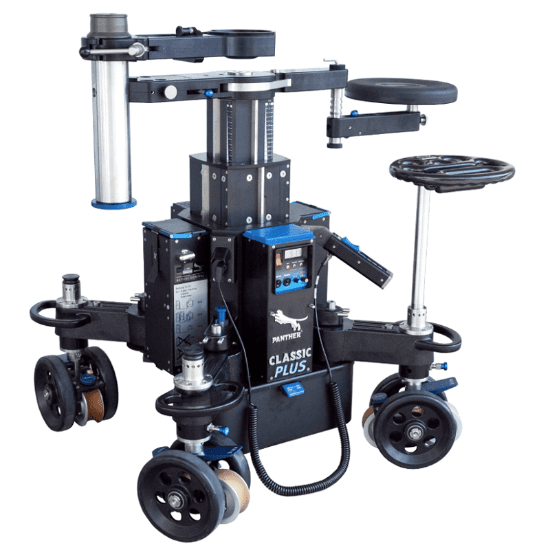

Un dolly es tan bueno como las vías sobre las que rueda. Un travelling puede tener la mejor cámara y el mejor operador, pero si la vía no está bien nivelada, el plano se mueve, salta o pierde el horizonte. En esta guía explicamos qué son las vías de travelling, qué tipos existen y cómo se montan para que el movimiento sea perfecto.
Qué son las vías de travelling
Son raíles modulares, normalmente de aluminio o acero, sobre los que se desplaza el dolly. Garantizan que el movimiento sea suave y siga siempre la misma trayectoria, toma tras toma. Sin vías, el dolly solo puede trabajar sobre suelos muy lisos, como un plató o un pavimento pulido.
Tipos de vías
1. Vías rectas
La base de cualquier travelling. Se fabrican en tramos que se unen entre sí; por ejemplo, Panther ofrece tramos de 0,9 m, 1,6 m y 2,3 m en su gama Precision Track. Combinándolos se consigue la longitud que pide el plano.
2. Vías curvas
Permiten travellings en arco o círculo alrededor de un personaje o un objeto. Con tramos de 45° se puede cerrar un círculo completo.
3. Anchos de vía
La distancia entre raíles tiene que coincidir con las ruedas del dolly. En Europa es muy habitual el ancho de 62 cm; existen también vías más anchas para plataformas grandes.
4. Vías con sistema de nivelación
Algunas vías integran soportes regulables para nivelar sin calzos, lo que ahorra mucho tiempo en suelos irregulares.

Cómo se montan y nivelan
- Marcar el recorrido con dirección y operador: inicio, final y posición de cámara.
- Colocar las vías dejando margen al principio y al final para arrancar y frenar el dolly.
- Nivelar con calzos de madera (cuñas) y tablones bajo los puntos bajos, comprobando con nivel en ambas direcciones.
- Revisar uniones, que no haya saltos entre tramos.
- Probar el dolly en vacío y con cámara, y corregir cualquier golpe o ruido.
Es un trabajo de maquinista: un buen montaje de vías ahorra repeticiones durante toda la jornada. Lo contamos en qué hace un maquinista de cine.
Vías según el suelo
| Suelo | Cómo se trabaja |
|---|---|
| Plató o suelo pulido | Dolly sin vías o vías directamente apoyadas |
| Interior con desniveles | Vías con calzos o sistema de nivelación |
| Tierra o césped | Vías sobre tablones para repartir peso |
| Arena | Base amplia de tablones y nivelado frecuente |
| Roca volcánica | Muchos calzos y revisión de apoyos |
En exteriores de Canarias el terreno manda; lo vemos en rodar en playas, dunas y paisajes volcánicos.
Cuántos metros de vía pedir
La regla práctica: longitud del movimiento más un margen de arranque y otro de frenada. Un travelling de 4 m en pantalla suele necesitar algo más de vía para que el dolly alcance la velocidad y se detenga con suavidad. Si el plano tiene varias posiciones de cámara o un cambio de dirección, conviene prever tramos adicionales o curvas.
Para recorridos de menos de un metro, quizá no haga falta dolly: un slider es más rápido de montar.
Preguntas frecuentes
¿Para qué sirven las vías de travelling?
Para que el dolly se desplace con suavidad y siguiendo siempre la misma trayectoria, incluso en suelos irregulares, de modo que el movimiento se pueda repetir en cada toma.
¿Qué ancho tienen las vías de dolly?
Depende del sistema. En Europa es muy habitual el ancho de 62 cm, y existen vías más anchas para plataformas grandes. Deben coincidir con las ruedas del dolly.
¿Cómo se nivelan las vías en un suelo irregular?
Con calzos de madera y tablones bajo los puntos bajos, o con vías que integran soportes de nivelación, comprobando con nivel en ambas direcciones.